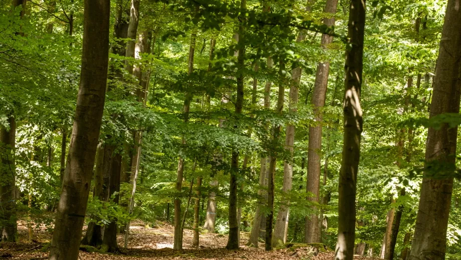
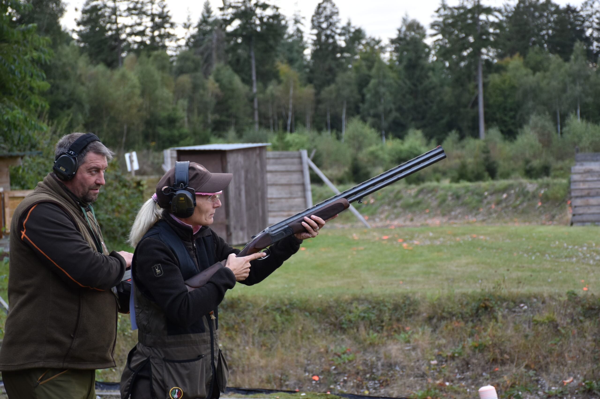
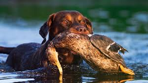
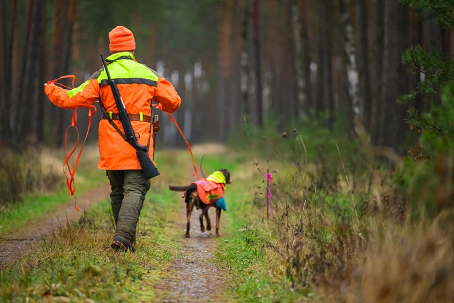
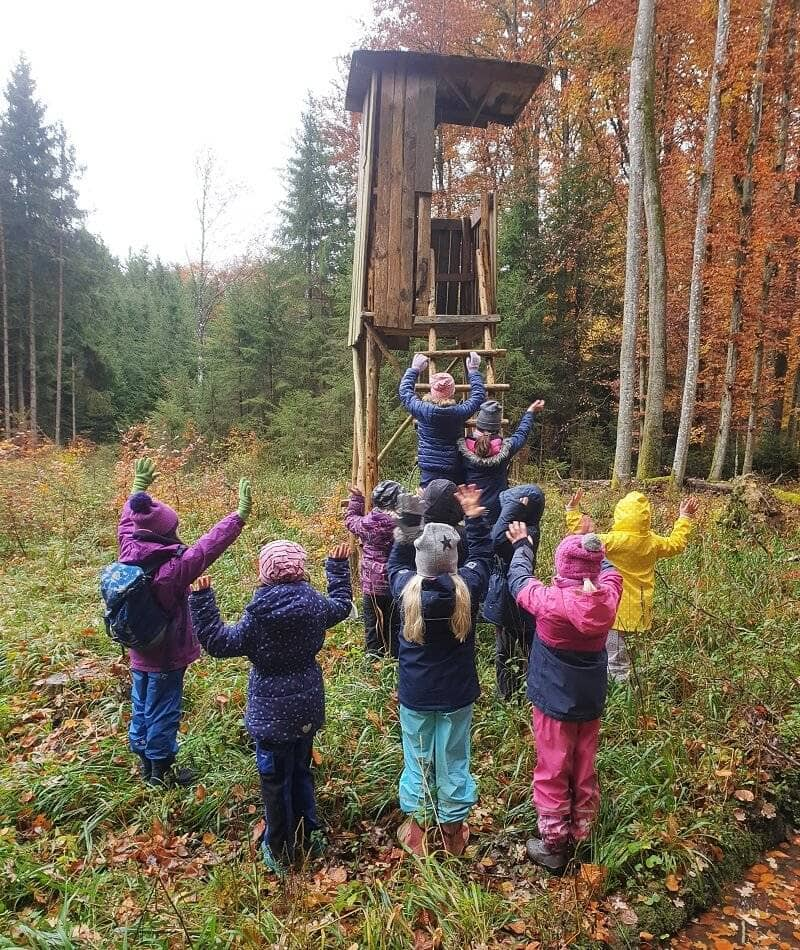
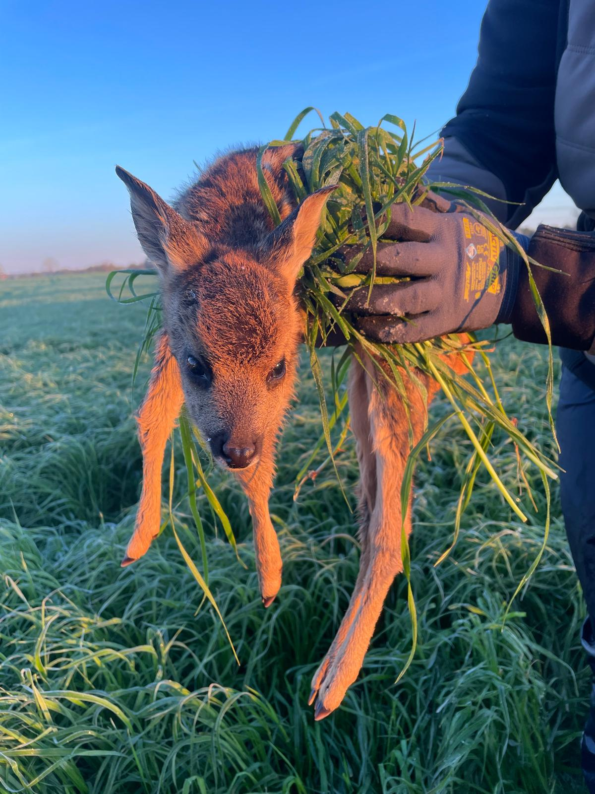
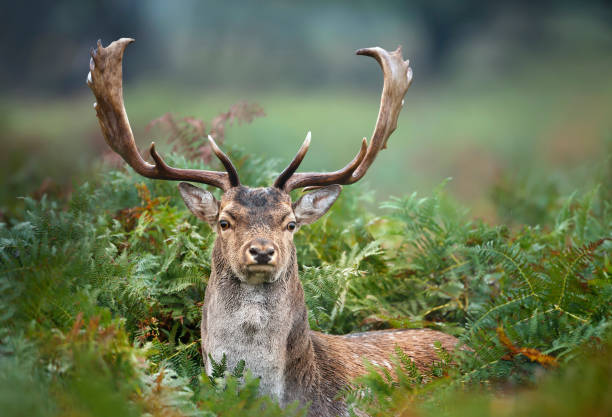

Erfolgreiche Jungwildrettungssaison 2025 – über 120 Kitze gerettet
Dank modernster Drohnentechnik und dem unermüdlichen Einsatz unserer Ehrenamtlichen konnten in diesem Frühjahr wieder zahlreiche Rehkitze vor der Mahd gerettet werden.
WeiterlesenDie Kreisjägerschaft Bad Segeberg e.V. vertritt über 1.800 Jägerinnen und Jäger im Kreis Bad Segeberg. Wir engagieren uns für nachhaltige Jagd, aktiven Naturschutz und die Verbindung von Mensch und Natur.

Herzlich willkommen bei der Kreisjägerschaft Bad Segeberg e.V.! Als Zusammenschluss aller Jägerinnen und Jäger im Kreis Bad Segeberg sind wir Motor einer nachhaltigen Jagd und des aktiven Naturschutzes in unserer Heimatregion.
„Die Jagd ist mehr als das Erlegen von Wild – sie ist eine tiefe Verantwortung gegenüber unserer Natur, unserem Wild und den kommenden Generationen. Gemeinsam gestalten wir eine lebenswerte Landschaft im Kreis Bad Segeberg."
Von der Jungwildrettung im Frühjahr über die Hundeausbildung bis hin zu Naturschutzprojekten und dem Jagdhornblasen – unsere Mitglieder bringen sich das ganze Jahr über aktiv ein.
Unsere Aufgaben und Tätigkeitsbereiche im Überblick

Regelmäßiges Übungsschießen, Schießstandbetrieb und Ausbildung für sichere und verantwortungsvolle Jagdausübung.
Mehr lesen
Ausbildung und Prüfung von Jagdhunden – von der Grundausbildung bis zur Prüfung für erfahrene Gespanne.
Mehr lesen
Speziell ausgebildete Gespanne zur sicheren Nachsuche und Wildbreteinhaltung im gesamten Kreisgebiet.
Mehr lesen
Naturerlebnisse, Wildtierkunde und Umweltbildung für Kinder und Jugendliche – Jagd erleben und verstehen.
Mehr lesenPflege der jagdlichen Tradition durch aktive Bläsergruppen und Teilnahme an Wettbewerben auf Landes- und Bundesebene.
Mehr lesenBiotoppflege, Heckenanlage und Schutzmaßnahmen für heimische Wildtiere und ihre Lebensräume.
Mehr lesen
Koordinierte Drohneneinsätze zur Rettung von Rehkitzen und Bodenbrütern vor der Frühjahrsmahd.
Mehr lesen
Alle Veranstaltungen, Schießtage, Hegeringtreffen und Sonderevents der KJS Bad Segeberg auf einen Blick.
Mehr lesenAktuelle Nachrichten, Berichte und Hinweise aus unserer Gemeinschaft
Dank modernster Drohnentechnik und dem unermüdlichen Einsatz unserer Ehrenamtlichen konnten in diesem Frühjahr wieder zahlreiche Rehkitze vor der Mahd gerettet werden.
WeiterlesenBei strahlendem Wetter absolvierten 14 Hunde-Gespanne die diesjährige Frühjahrsschweißprüfung mit hervorragenden Ergebnissen.
WeiterlesenÜber 200 Jägerinnen und Jäger beteiligten sich kreisübergreifend am diesjährigen Frühjahrsputz und sammelten tonnenweiße Abfälle aus der Landschaft.
WeiterlesenAktuelle Veranstaltungen der Kreisjägerschaft Bad Segeberg
Stimmen aus unserer Gemeinschaft
„Die Jungwildrettung ist für mich das Herzstück unserer Arbeit. Wenn man im Frühjahr ein Kitz in den Händen hält und weiß, dass man sein Leben gerettet hat – das ist unbezahlbar."
„Mein Schweißhund und ich sind seit Jahren im Kreis Bad Segeberg im Einsatz. Die Kameradschaft und das gemeinsame Arbeiten für das Wild – das ist es, was uns alle verbindet."
„Das Jagdhornblasen bewahrt ein Stück gelebte Tradition. Ich bin stolz, Teil der Bläsergruppe Bad Segeberg zu sein und unsere Musik bei festlichen Anlässen erklingen zu lassen."
Ob als Jäger oder Fördermitglied – bei der Kreisjägerschaft Bad Segeberg sind Sie Teil einer aktiven Gemeinschaft, die Natur und Jagd verantwortungsvoll lebt.